Calculus One
Function
A function takes one input and produces one output.
Limits
the limit of a sum is the sum of the limits provided the limits exist.
f(x) = sinx / x , 求 lim x→0
f(1) = 0.8414…
f(0.1) = 0.998…
f(0.01) = 0.99998…
…
f(0.000001) = 0.9999999999 …
Is the limit 1 ?
It’s just a idean, we don’t yet have a rigorous argument.
Here’s a sketch of a more rigorous argument that the limit of sinx/x , as x approaches 0 , is equal to one.
1 | cosx < sinx/x < 1 |
is true if x close to 0 but not 0.
Squeeze theorum
1 | g(x)≤f(x)≤h(x) , x near a |
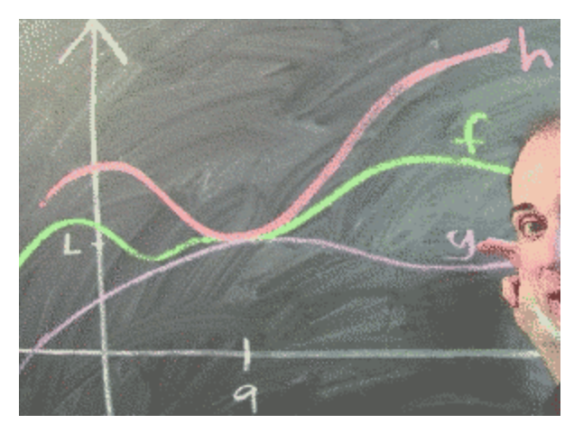
limit of product
if limx→af(x) = L ,
limx→ag(x) = M , then
limx→a(f(x)·g(x)) = L·M
the limit of a product is the product of the limits provided the limits exist.
limx→3 x/(x-3)
我们不应该除以0， 实际上我们也并没有除以0. 我们实际上只是除以了一个接近0的数。而当我们除以一个接近0的数的时候，会发生什么呢？ 如果分母是一个很小的正数，会得到一个很大的正数，如果分母是接近0的负数，会得到一个很大的负数。 这意味着该极限应该 既接近于 很大的正数，又接近一个很大的负数。这个数不可能接近任何固定的值。
注意：这里分子极限为3， 根前面的 sinx / x 不一样， sinx/x 是 0/0型极限。
limx→1 (x²-1)/(x-1) = limx→1 (x+1)(x-1)/(x-1) = limx→1 (x+1)
PS. (x+1)(x-1)/(x-1) and (x+1) not the same function, 一个在 x=1 处 没定义， 一个在 x=1处有定义。 But the limit doesn’t care. 极限只取决于 1 附近的函数值。 而在 1附近，这两个函数实际上是一样的。
Continuity
One-Sided Limit:
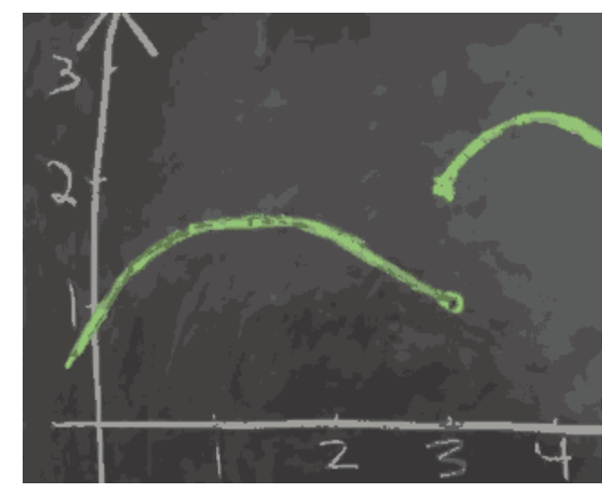
- If limx→a⁺f(x) != limx→a⁻f(x) , then limx→af(x) does not exist.
- if limx→a⁺f(x) = limx→a⁻f(x) = L, then limx→af(x) = L .
Continuous:
f(x) is continuous at a , means that input near a are sent to outputs near f(a).
more precise :
- f(x) is continuouse at a means that limx→af(x) = f(a). That is:
- f(x) is defined at x=a
- limx→af(x) exists
- limx→af(x) = f(a)
Intermediate Value Theorem
- Suppose f(x) is continuous on [a,b] , and y is between f(a) and f(b).
- Then , there is an x between a and b , so that f(x) = y .
- 既： [f(a), f(b)] 之间随机选取一个值 y, 应该存在对应的 x ，使得 f(x) = y.
How to approximate √2 ?
- use intermediate value theorem , to try and find x, so that f(x) = x² - 2 = 0
Infinity
Why is there an x so that f(x) = x
- f(x) cts on [0,1], 0 ≤ x ≤ 1 ; Then there is an x , 0 ≤ x ≤ 1 , and f(x) = x.
- 称这个点 (x, f(x)) 为函数的不动点
Proof:
- g(x) = f(x) - x is cts
- g(0) = f(0) - 0 ≥ 0
- g(1) = f(1) - 1 ≤ 0
- by IVT , find x , so that g(x) = 0, that is f(x) - x = 0 => f(x) = x.
应用：
- f(x) = cosx

What means limx→af(x) = ∞ ?
- f(x) is as large as you like , if provide x is close enough to a.
- 极限不存在 case
- 极限无穷大
- 左右极限不相等
- 在正负无穷之间来回震荡
- 极限无穷大 是 极限值收敛于无穷。但左右极限不等、震荡仍判定为极限不存在。
What means limx→∞f(x) = L ?
f(x) is as close as you want to L , provided x is large enough.
求 limx→∞ 2x/(x+1)
- 这里无法再使用 商的极限法则，因为分子分母的极限都不存在
- 但是可以 通过 分子分母都 乘上 1/x 来求解， 结果为 2. ( 测试：代入 1000， 10000 ，其结果接近2 )
- x→∞ ,∞/∞型极限， 算法中 big O的思想
whay $\infty$ is not a number?
if $\infty$ is number, than
- $\infty$ - $\infty$ = 0
- $\infty$ + 1 = $\infty$
- 综合1,2 -> 1 = 0
Limits definition
For every positive real number ϵ>0, there exists a positive real number δ>0 so that whenever |x−a|<δ, we have |f(x)−L|<ϵ.
you give me a ϵ that |f(x)−L|<ϵ, I will find a δ to satisfy your demand.
Derivative
What are derivatives
definition
The derivative of f at the point x is defined to be :
.
The derivative of f at the point x , is written as f’(x).
- 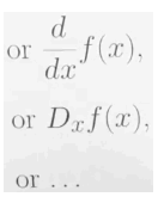
Derivative is slope !
Why is f(x) = |x| not differentiable at x =0 ?
When I say a function is differentiable , what I really mean is that when I zoom in, the function looks like a straight line, but not f(x) = |x| .
f’(0) = limx→0 |h|/h , DNE.
- Why should you care about differentiable function at all ?
- If a terrible looking function is differentiable , if I zoom in on some point, the thing looks like a straight line.
- Calculus is all about replacing the curved objects that we can’t understand with straight line , which we have some hope of understanding.
How does wiggling x affect f(x) ?
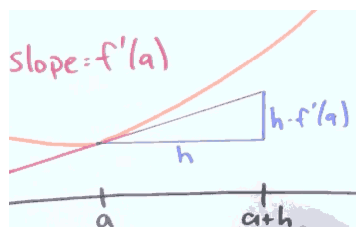
f’(x) = 3x , f(2) = 4, f(2.01) = ?
f(2.01) = f(2) + 0.01·f’(2) = 4 + 0.01·6 = 4.06.
Why would I care to find derivatives ?
Why is sqrt(9999) so close to 99.995?
- √9999 = √(10000-1) ≈ √10000 - 1·(derivate at 10000) = 100 - 1· 1/(2·100) = 100 - 0.005 = 99.995
What information is recorded in the sign of the derivative ?
1 | f(x+h) ≈ f(x) + h·f'(x) |
It means that if the sign of f’(x) is negative , f(x+h) is decreasing , otherwise it is increasing.
How do differentiability and continuity relate ?
Why is a differentiable function necessarily continuous ?
- Theorem : if f is differentiable at a , then f is continuous at a.
- 可微必(原)连续
- Proof:
- if f’(a) exist , then limx→a (f(x)-f(a)) = 0·f’(a) = 0
- that means f(x) = f(a) , while limx→a , it is the definition of continuity.
可微分、连续与可导的关系？
- 一元函数：
- 可导必 连续，连续推不出可导，
- 可导与可微等价。
- 多元函数：
- 可偏导与连续之间没有联系，也就是说可偏导推不出连续，连续推不出可偏导。
- 可微必可偏导，可微必连续，可偏导推不出可微，但若一阶偏导具有连续性则可推出可微。
- 某点处偏导数存在与否与该点连续性无关.（即使所有偏导数都存在也不能保证该点连续）.
- 偏导数存在是可微的必要条件,但非充分条件（可微一定偏导数存在,反之不然）；
- 偏导数存在且偏导数连续是可微的充分条件,但非必要条件（偏导数存在且(导)连续一定可微,反之不然）.
How do I find the derivative ?
d/dx xⁿ = n·xⁿ⁻¹the sum of derivative is the derivative of sums
\begin{align}
& h(x) = f(x) + g(x)\
& h^\prime(x) = f^\prime(x) + g^\prime(x)\
\end{align}
How do I differentiate a product ?
1 | d/dx ((1+2x)·(1+x²)) |
Why is it true ?
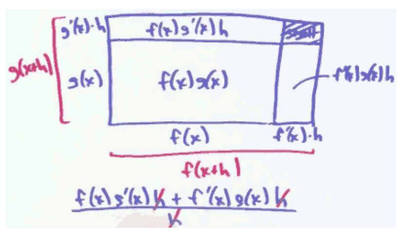
How do I differentiate a quotient ?
1 | Let h(x) = f(x)/g(x). |
下乘上导 减 上乘下导，除以 下下
Higer Derivatives
- concave up
- concave down
- inflection point(拐点)
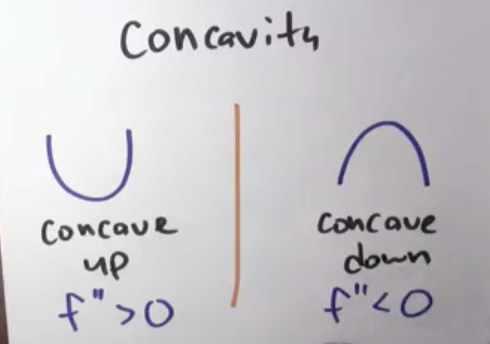
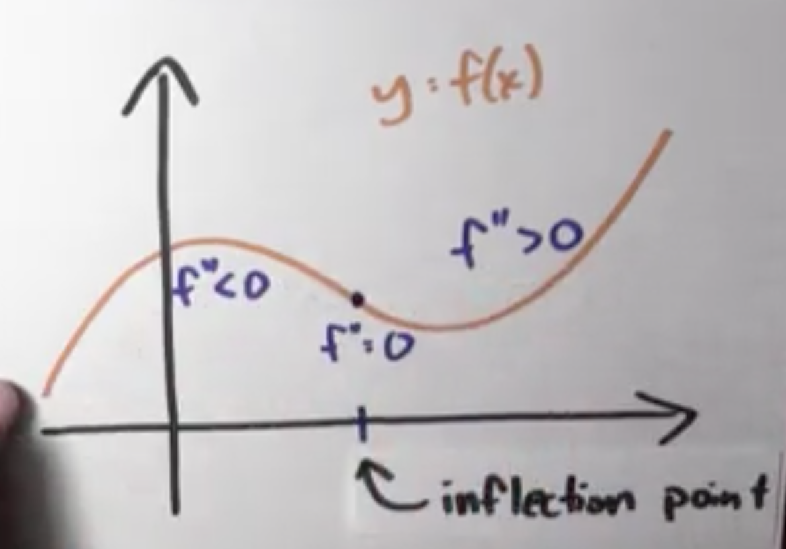
d/dx is just a function

Extreme values
How can I find extreme values ?
- If either f’(c) does not exist , or f’(c) = 0 , call c a critical point of f.
- extreme values will always be at critical point.
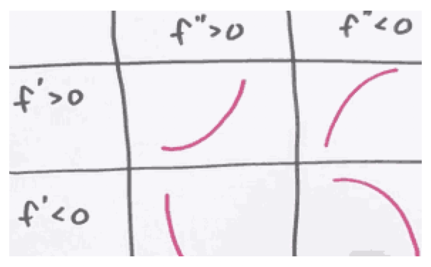
How do I differentiate eˣ ?
f(x) = 1 + x + x²/2 + x³/6 + x⁴/24 + … = eˣ
Chain Rule
What is the Chain Rule
- d/dx g(f(x)) = g’(f(x))·f’(x)
- d/dx g(f(x)) : change in g(f(x)) / change in x
- g’(f(x)) : change in g(f(x)) / change in f(x)
- f’(x) : change in f(x) / change in x
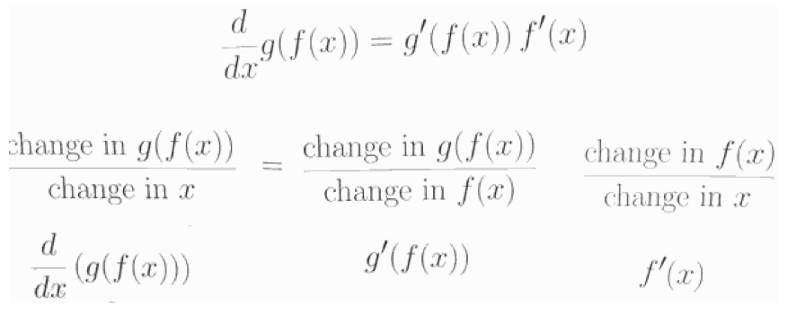
How do I find the tangent line to a curve ?
- x³ + y³ - 9xy = 0

- This in NOT the graph of a function, it’s really a relation , a equation.
implistic differentiation
treat y as the function of x and use the chain rule
\begin{align}
& x^3 + y^3 - 9xy = 0\
& 3x^2 + 3y^2 \cdot \frac{dy}{dx} - 9y - 9x \cdot \frac{dy}{dx} = 0 \
& 3x^2 - 9y + ( 3y^2 - 9x )\cdot \frac{dy}{dx} = 0 \
& ( 3y^2 - 9x ) \cdot \frac{dy}{dx} = - 3x^2 + 9y \
& \frac{dy}{dx} = (- 3x^2+ 9y) / ( 3y^2 - 9x )
\end{align}
How do I find the derivative of an inverse function ?
- What is inverse function ?
- f⁻¹(f(x)) = f⁻¹(y) = x
- inverse function 就是 互换了 x轴 和 y轴

- What is the derivative of an inverse function ?

- since derivate is just the slope, and inverse function exchange the x axis and y axis, so
- if the derivative of f(x) is m , then the derivative of f⁻¹(y) = 1/m. 注意：这里 x，y并不相等
1 | f(x) = x² |
What is the derivative of log ?
1 | eˣ = y |
more properties of log function
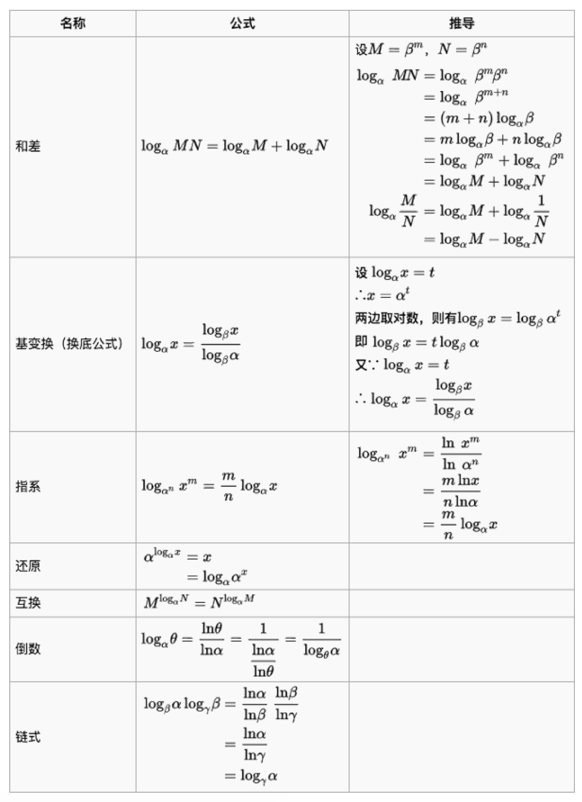
1 | f(x) = eˣ |
1 | f(x) = logₐx |
1 | f(x) = 2ˣ , 我们知道了怎么求 eˣ,logx 的 导数 |
What is logarithmic differentiation ?
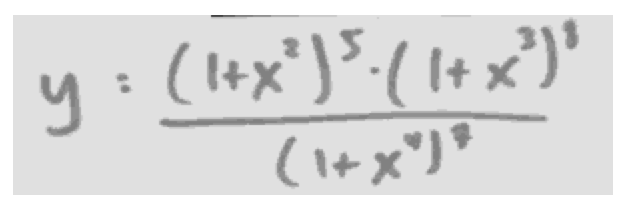
求 y’
You definitely can useproduct rule, power rule , chain rule, quotient rule … to solve this problem.
But use log can make things tricky : 使用 log 来简化一大堆的指数
1 | logy = 5log(1+x²) + 8log(1+x³) - 7log(1+x⁴) |

- log makes the exponential to multiply
- log makes the multiply to add
How can I multiply numbers quickly ?
1 | 2038074743 |
f(x)>0, g(x)>0
log(f(x)·g(x)) = log f(x) + log g(x)
differentiate
1/(f(x)g(x))·d/dx( f(x)g(x) ) = 1/f(x)·f’(x) + 1/g(x)·g’(x)
d/dx( f(x)g(x) ) = g(x)·f’(x) + f(x)·g’(x)1
2
3
4
5
6
7
8
9
10
11
12
13
14
15
16
17
18
19
20
21
22
23
24
25
26
27
28
29
30
31
32
33
34
35
36
37
38
39
40
41
#### How do we prove the quotient rule
- use chain rule
---
## Derivatives of Transcendental (Trigonometric) Functions
### What is Trigonometric ?


### How can I differentiate trig functions ?
#### What is the derivative of sin and cos?

- θ increased by h
- point ( cosθ, sinθ ) moved to ( cos(θ+h) , sin(θ+h) )
- sin(θ+h) = sin(θ) + h·cosθ
- sinθ increased by h·cosθ
- cos(θ+h) = cos(θ) - h·sinθ
- cosθ decreased by h·sinθ
- conclusion
- d/dθ sinθ = cosθ
- d/dθ cosθ = -sinθ
- if you differentiate sine 4 times, you get back to itself.
#### What is the derivative of tan x ?
- use quotient rule
d/dθ tanθ = ( cosθcosθ - sinθ (-sinθ) )/cos²θ = 1/cos²θ = sec²θ1
2
3
4
5
6
7
8
9
10
11
12
13
14
15
16
17
18
19
20
21
22
23
24
25
26
27
28
29
30
31
32
33
34
35
36
37
38
39
40
41
42
43
44
45
46
#### What is the derivative of sin(x²) ?
- chain rule
- d/dθ = cos(x²)·2x
- |sin(x²)| ≤ 1
- cos(x²)·2x can be as large as you like !
#### What is the derivative of other trig functions ?

trig func | derivative
--- | ---
sinx | cosx
cosx | -sinx
tanx | sec²x
cotx | -csc²x
secx | secx·tanx
cscx | -cscx·cotx
---
### How can I differentiate inverse trig function ?
**The trig function are not invertible**! So we're only going to talk about the inverse of trig functions after we restrict their domain.
trig function | domain
--- | ---
arcsin | [-π/2, π/2]
arccos | [0, π]
arctan | [-π/2, π/2]
- what is the arcxxx ?
- θ = arccos(1/2) , is just to say that θ is the length of the arc whose cosine is 1/2.
- 
- draw picture to help you under stand inverse trig function
- 
#### What are the derivatives of inverse trig functions ?
- d/dx arcsin x = ?
- let f(x) = arcsin x
- so f(sinx) = x , assuming arcsin is differentiable :
f’(sinx) = 1
f’(sinx)·cosx = 1
f’(sinx) = 1/cosx = 1/√(1-sin²x)
f’(x) = 1/√(1-x²)1
2
3
4
5
6
```python
>>> from sympy import diff,symbols,asin
>>> x, y, z = symbols('x y z')
>>> diff ( asin(x) ,x )
1/sqrt(-x**2 + 1)
| trig function | derivateive |
|---|---|
| arcsin | 1/√(1-x²) |
| arccos | -1/√(1-x²) |
| arctan | 1/(1+x²) |
What can we learn from the derivatives of trig functions ?
Why do sin / cos oscillate ?
- kind of accelerate = - position
- f’’(t) = -f(t)
- the reason why thess function (cos / sin ) are bouncing up and down like this, is because in every case , the function’s 2nd derivative is negative its value.
- when the function is positive, the 2nd derivative is negative , pulling it down
- when the function is negative , the 2nd derivative is positive , pushing it back
How can I approximate sin1 ?
- tips 1:
- sin(x) ≈ x , if x is small ( eg.x < 0.4 )
1 | f(x) = sinx , f(0) = 0 |
- tips 2:
- sin(2x) = 2·sin(x)·cos(x)
- sin(2x) = 2·sin(x)·√(1-sin²(x))
1 | sin 1/32 ≈ 1/32 = 0.03125 |
Multiplying Trigonometric Functions with Slide Rules
How can we multiply numbers with trigonometry?
- cosα cosβ = (cos( α + β ) + cos( α - β )) /2
- 0.17 · 0.37 = ? 查表法 again….
Derivatives in the Real World
How can derivatives help with limites ?
L’Hopital’s rule
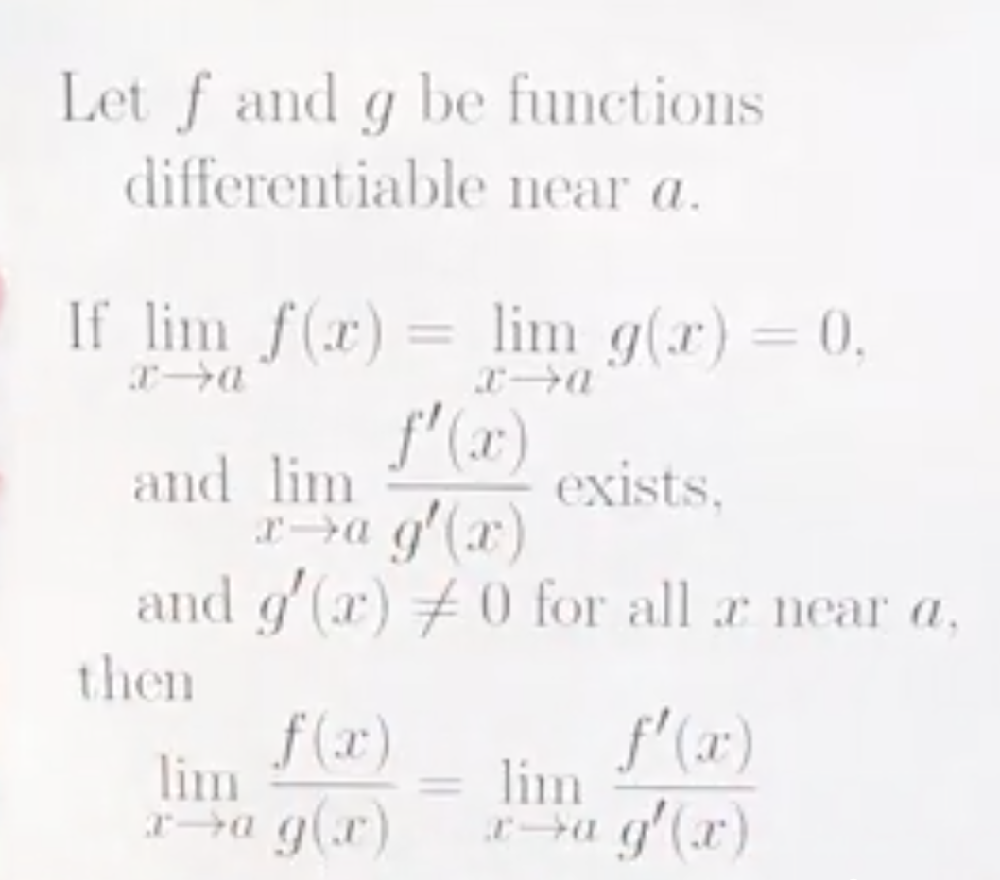
\begin{align}
& \lim{x\rightarrow a}f(x) = 0 \
& \lim{x\rightarrow a}g(x) = 0 \
& \lim{x\rightarrow a}\frac{f^\prime (a)}{g^\prime (a)} exist\
& \lim{x\rightarrow a} \frac{f(x)}{g(x)} = \lim_{x\rightarrow a}\frac{f(a) + f^\prime (a)·(x-a)}{g(a) + g^\prime (a)\cdot(x-a)} =\frac{f^\prime (a)}{g^\prime (a)}\
\end{align}
How can L’Hopital Rule help with limits not of the form 0/0 ?
- L’Hopital Rule also works for $\frac{\infty}{\infty}$
- for $0\cdot \infty$ , try to transform other forms to $\frac{0}{0}$ or $\frac{\infty}{\infty}$
- $1^\infty$

- $\infty^0$

- $\infty - \infty$
now we get $\infty\cdot 0$ form
now it is 0/0 form , we apply L’Hopital’s rule
summarization
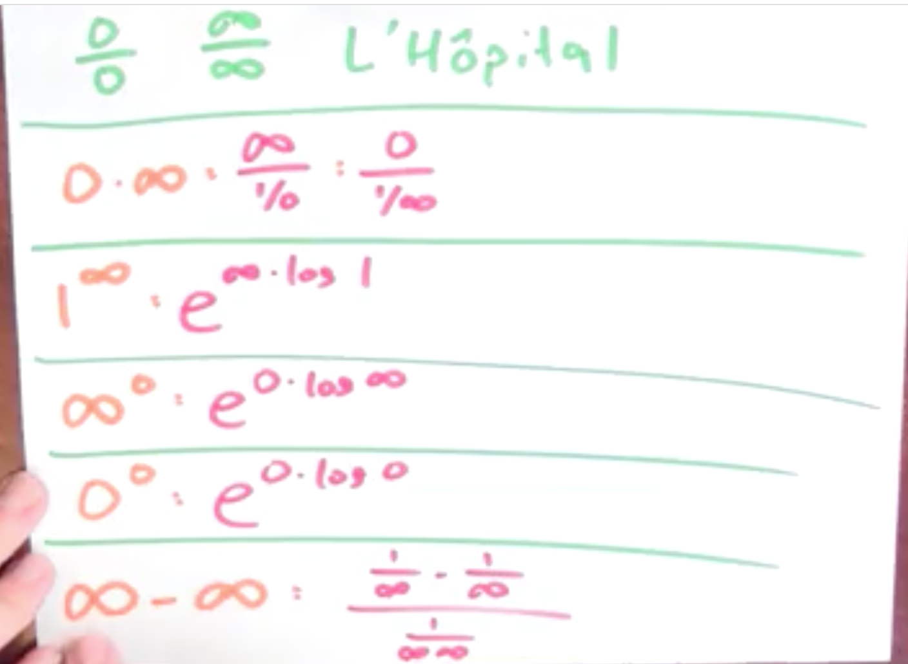
| form | solution |
|---|---|
| $\frac{0}{0}$ , $\frac{\infty}{\infty}$ | L’Hopital |
| 0·∞ | ∞ / (1/0) , 0 / (1/∞) |
| 1∞ | e∞·log1 |
| ∞⁰ | e0·log∞ |
| 0⁰ | e0·log0 |
| ∞ - ∞ | ( 1/∞ - 1/∞ ) / (1/∞∞) |
Why shouldn’t I fall in love with L’Hopital
- limx→∞ (x+sinx)/x
- if you L’Hopital rule to solve it, you will get limx→∞ (1+cosx) / 1 , that limit does not exist.
- But it indeed has limit :
limx→∞ (x+sinx)/x = limx→∞ (x/x + sinx/x) = 1 + limx→∞sinx/x = 1
- When you’re doing those limit problems , don’t forget that you can just algebraically manipulate things. There might be an easier way than bring out L’Hopital .
How can derivatives help me to understande rates of change in the real world ?
影子长度的变化速率
- the lamp is 3 meters high
- man is 2 meters high
- man is walking on speed 2meters/second
- what is the changing rate of length of shadow ?
- 4 steps to solve this problem
- draw picture
- list euqation
- differentiate
- solve
1 | (X+S)/3 = S/2 |
f(x) = ⎧ x - (x² - 2x) , if x² - 2x ≥ 0
⎩ x + (x² - 2x) , if x² - 2x < 0
f’(x) =⎧ 1 - (2x-2) , if x² - 2x > 0 , // no ‘=’ here, because x=2 not differentiable
⎩ 1 + (2x-2) , if x² - 2x < 0
=⎧ 3 - 2x , if x<0 or="" x="">2
⎩ -1+ 2x , if 0 1
2
3
4
5
6
7
8
9
10
11
12
13
14
15
16
17
18
19
20
21
22
23
24
25
26
27
28
29
30
31
32
33
34
35
36
37
38
39
40
41
42
43
44
45
46
47
48
49
50
- crit points
- f'(x) = 0 : x=1/2
- f not differentiable : x=2
- end point : x=0 , x=2

x | f(x)
--- | ---
0 | 0
1/2 | - 1/4
2 | 2
3 | 0
---
### Why would I want to opimize a function ?
#### How large can xy be if x + y = 24?
- f(x) = x·(24-x) = 24x -x²
- f'(x) = 24 - 2x = 0
- x = 12
---
- Arithmetic Mean - Geometric Mean (AM-GM) Inequality
- (a+b)/2 ≥ √(ab)
- with equality iff a==b
---
<h2 id="9f4cacf06f1b57dda6be7f4448d1c76b"></h2>
### Optimization in Action
<h2 id="820df180c483345562cc37739bd847f9"></h2>
#### How large of an object can you carry around a corner?

- break up the stick into 2 pieces , each from a wall to this corner
- the bottom piece has the length: a·cscθ
- the other one has the length: b·secθ
- the length of the whole stick is :
- l(θ) = a·cscθ + b·secθ
- what's the constraint in this problem ?
- 0 < θ < π/2
l(θ) = a·cscθ + b·secθ
l’(θ) = -a·cscθ·cotθ + b·secθ·tanθ
l’(θ) = 0 ?
b·secθ·tanθ = a·cscθ·cotθ
(secθ·tanθ )/(cscθ·cotθ ) = a/b
tan³θ = a/b
tanθ = ∛(a/b)
θ = arctan( ∛(a/b) )
use θ = calculate l(θ)
1 |
|
f(1) ≈ f(0) + 1·f’(0)
= 1 + 1·1 = 21
2
2 is a terrible approximation but we can do better. If we can do any approximation once, we can do it a bunch of time.
f(0.5) ≈ f(0) + 0.5·f’(0)
= 1.5
f(1) ≈ f(0.5) + 0.5·f’(0.5)
= 1.5 + 0.5·f(0.5) = 1.5 + 0.5·1.5 = 2.251
2
3
4
5
6
7
8
9
10
11
12
13
14
15
16
17
18
19
20
21
10 steps are more better ! f(1)
---
- Euler Method
- the repated linear approximation called **Euler Method**
- f(h) ≈ f(0) + h·f'(0)
- f(2h) ≈ f(h) + h·f'(h)
- f(3h) ≈ f(2h) + h·f'(2h)
- ...
- the cool thing here is that I'm using linear approximation in each stage ,and then I'm using the information from previous stage not only to approximate the function's value , but also to approximate the function's derivative.
- In the real world peaple don't really use the Euler method so often.
- It's sometimes better not to pick a point which is all the way on the left hand side of the interval .
- sometimes you'll see using the middle point: `f(h) ≈ f(0) + h·f'(h/2)`
- Quiz:
- You are interested in the function f which satisfies the differential equation
- f'(x) = -0.5x² - 0.5f(x) , and which satisfies f(-3) =0 .
- Use repeated linear approximation (otherwise known as Euler's Method) to approximate the value of this function at x=−1 , using a step size of 1/2
reduce( lambda x,y: x + 0.5( -0.5yy - 0.5x ) , [ 0,-3,-2.5,-2,-1.5 ] )
-3.140625
2
3
4
5
6
7
8
9
10
11
12
13
14
15
16
17
18
19
20
21
22
23
24
25
26
27
28
29
30
31
32
33
34
35
36
37
38
39
40
41
42
43
44
45
46
47
48
49
50
51
### What does dx mean by itself?
- **dx** means differential
- **dy** is change in the linearizatioin of y
- or the linear approximation, or the tangent line aporiximation.
- your **dy**'s had better include a **dx**.

---
- y =f(x)
- dy = f'(x)dx
- d(u+v) = du + dv
- d(uv) = (du)v + u(dv)
### What is Newton's method?
- The problem: A "nice" function f , nice means differentiable
- Find x so that f(x) = 0
- Now in practice, this is way too much to ask for
- Find x so that f(x) close to 0.
- We have already done this , using the Intermediate Value Theorem
- The downside to this bisection method is just speed, it takes a really long time
- So a different method, called Newton's method, is much faster than this bisection trick

1. just start by making a potentially bad guess : x₀
- in this case , that's not a very good guess
2. draw the tangent line to the curve through that point f(x₀)
3. then my next guess will be wherever that tangent line crosses the x axis
- So here would be my next guess x₁
4. repeat the process.
---
We're going to start by thinking about this red line.

- the point slope form Of the red line:
- `y-f(x₀) = f'(x₀)·(x-x₀)`
- Newton's method tells me that I should use that linear approximation to the graph, figure out where the linear approximation crosses the x axis
- So to do that , I'm going to set y = 0
- 0-f(x₀) = f'(x₀)·(x-x₀)
- that'll tell me where the red line crosses the x axis, if I solve this equation for x
0-f(x₀) = f’(x₀)·(x-x₀)
= f’(x₀)·x - f’(x₀)·x₀
f’(x₀)·x₀ -f(x₀) = f’(x₀)·x
assuming f’(x₀) != 0
x₀ - f(x₀)/f’(x₀) = x1
2
3
4
5
6
7
8
9
10
11
12
13
14
15
16
17
18
19
20
21
22
23
24
25
26
27
28
29
30
31
32
33
34
35
36
37
38
39
40
41
42
43
44
45
46
47
48
49
50
51
52
53
54
55
56
57
58
59
60
61
62
63
64
65
66
67
68
69
70
71
72
73
74
75
76
77
78
79
80
81
82
83
84
85
86
87
88
89
90
91
92
93
94
95
96
97
98
99
100
101
102
103
104
105
106
107
108
109
110
111
112
113
114
115
116
117
118
119
120
121
122
- so x₁ is this:
- x₁ = x₀ - f(x₀)/f'(x₀)
- I can now write down the step by step process for Newtons method just using a formula
1. Initial guess x₀
2. new guess x₁ = x₀ - f(x₀)/f'(x₀)
3. x₂ = x₁ - f(x₁)/f'(x₁)
4. x₃ = x₂ - f(x₂)/f'(x₂)
5. ... **x<sub>n+1</sub> = x<sub>n</sub> - f(x<sub>n</sub> )/f'(x<sub>n</sub> )**
- The problem is that I can't promise you that Newton's method will actually work.
#### What is a root of the polynomial x^5 + x^2 - 1?
- here's the function where I want to find a root
- f(x) = x⁵ + x² -1
- I want to find some input that makes this function equal to 0
- 没有公式可以求 这个函数的根
- f(0) = -1, f(1) = 1
- So there has to be some input between 0 and 1 where this function's output is equal to 0
- f'(x) = 5x⁴ + 2x
- x₀ = 1
- x₁ = x₀ - f(x₀)/f'(x₀) = 1 - 1/7 = 6/7
- f(x₁) = (6/7)⁵ + (6/7)² -1 ≈ 0.197
- x₂ = x₁ - f(x₁)/f'(x₁) ≈ 0.812
- f(x₂) ≈ 0.014
- x₃ ≈ 0.809
- f(x₃) ≈ 0.000085
- So
- the intermediate value theorem promises me that there is a root
- Newton's method, or this bi-section algorithm permits me to get better and better approximations to that root
#### How can Newton's method help me to divide quickly?
- What if I wanted to calculate 1/b ?
- Newton's method is really a trick for finding zeroes of a function
- so to approximate 1/b, what I really want to find is a function *f* , so that f(1/b) = 0.
- There's a ton of different choices that are possible for such a function
- f(x) = 1/x -b
- f'(x) = -1/x²

- Then, we'll make this even more concrete. Let's set b = 7
- x₀ = 1/10
- x₁ = 1/10·(2-7·1/10) = 13/100
- x₂ = 13/100·(2-7·13/100) = 1417/10000
- x₃ = 14284777 / 100000000
- so 1/7 ≈ 0.14285...
- This method has name: **Newton-Raphson Division**
### What is the mean value theorem?
- Suppose *f* is continuous on [a,b] , and differentiable on (a,b) ; then
- there exists *c* in (a,b) , so that
- **f'(c) = ( f(b)-f(a) ) / (b-a)**
---
- here is one interpretation:
- if that function is giving you position , and the input to that function is time
- so the derivative of that function is velocity
- then that formula is saying that your average velocity is achieved , at some point, instantaneously
- ( f(b)-f(a) ) / (b-a) 是平均速度，f'(c) 是瞬时速度
- 在某个时刻，你的瞬时速度等于 (a,b)的平均速度
-
- mean value theorem means the slope of those 2 lines are same.
- The mean-value theorem is often told as a story about somebody driving a car
- At noon, you're in some city A, and at 1 p.m. You're driving your car and you've arrived in a city B, which is 100 miles away from city A.
- the Mean Value Theorem tells you that at some point during your journey, your speedometer said 100 miles per hour.
---
### Why does f'(x) > 0 imply that f is increasing?
- Theorem:
- Suppose f'(x) =0 on open interval , then *f* is constant on the interval.
- Suppose f'(x) >0 on open interval , then *f* is increasing.
- Suppose f'(x) <0 on open interval , then *f* is decreasing.
- using MVT to proof
### Should I bother to find the point c in the mean value theorem?
- The power of the mean value theorem lies not in the fact that you can actually go out and compute the value c
- The power lies in the fact, the mean value theorem tells you that it's possible , that you know there's a value of c out there, without you having actually go and find it.
------
## Antidifferentiation
You can really think of anti-differentiation as a sort of bridge between the, the differentiation section of this course and the integration section of this course.
### How do we handle the fact that there are many antiderivatives?
- f(x) = 2x
- F(x) = x²
- G(x) = x²+ 17
- H(x) = x²+ C
### How am I supposed to compute antiderivatives ?
#### What is the antiderivative of a sum?
- F is an antiderivative of f
- `∫f(x)dx = F(x)+C`
---
- if ∫f(x)dx = F(x)+C , ∫g(x)dx = G(x)+C
- then ∫(f(x)+g(x))dx = F(x) + G(x) + C ,
- or ∫(f(x)+g(x))dx = ∫f(x)dx + ∫g(x)dx.
- The antiderivative of the sum is the sum of the antiderivative .
#### What is an antiderivative for xⁿ ?
- ∫xⁿdx = xⁿ⁺¹/(n+1) + C
---
f(x) = 15x² -4x +3
∫(15x² -4x +3)dx
= ∫15x²dx - ∫4xdx + ∫3dx
= 15∫x²dx - 4∫xdx + ∫3dx
= 15·x³/3 - 4·x²/2 + 3x + C
= 5x³ - 2x² + 3x + C1
2
3
4
5
6
7
8
- Constant multiple rule:
- ∫a·f(x)dx = a·∫f(x)dx
#### What is the most general antiderivative of 1/x?
- The most genral antiderivative of 1/x has the form
⎧ logx + C , if x>0
F(x)= ⎨
⎩ log(-x) + D , if x<0>1
2
3
4
5
6
7
8
9
10
11
12
13
14
15
16
17
18
19
20
21
22
23
24
25
26
27
28
29
30
31
32
33
34
35
36
37
38
39
40
41
42
43
44
45
46
47
48
49
50
51
52
53
54
55
56
57
58
59
60
61
62
63
64
65
66
67
68
69
70
71
72
73
74
75
76
77
78
79
80
81
82
83
- for constant C and D.
---
- Suppose f is a function with **an** antiderivative F ,
- Then any another antiderivative for f has the form
- F(x) + C(x)
- for some **"locally constant"** function C
- C不仅仅是一个常数，C是一个局部常值函数
- 关键在于，这个C可以在不同的区间值不通
---
- 很不幸， Some textbooks write
- ∫1/xdx = log|x| + C
- is fine **provided C is a locally constant function of x**.
#### What are antiderivatives of trigonometric functions?
- ∫cosxdx = sinx + C
- ∫sinxdx = -cosx + C
- ∫tanxdx = log(secx) + C
- ∫secxdx = log|secx + tanx| + C
- anti-differentiation is HARD.
#### What are antiderivatives of eˣ and natural log?
- ∫eˣdx = eˣ + C
- ∫log(x)dx = x·log(x) - x + C
### Why is this so hard ?
#### What is the antiderivative of f(mx+b)?
- if we have ∫f(x)dx = F(x) + C
- ∫f(mx+b)dx = F(mx+b)/m + C
- eg.
- ∫sin(2x+1)dx = -cos(2x+1)/2 + C
- ∫sec²xdx = sin(x)/cos(x)+C , ∫sec²(-5x+7)dx = sin(-5x+7)/cos(-5x+7)/-5 + C = sin(5x-7)/cos(5x-7)/5 +C
#### What is an antiderivative for e^(-x²) ?
- ∫e<sup>-x²</sup>dx **can not be expressed using elementary functions**.
- elementary function means polynomials, trig functions, eˣ, log, etc...
- **many functions are impossible to antidifferentiate**.
### Why would anybody want to do this ?
#### Knowing my velocity, what is my position?
- p(t) = position
- v(t) = velocity
- p'(t) = v(t)
- p(t) = ∫v(t)dt
- eg.
- v(t) = 3-10t
- p(t) = ∫(3-10t)dt = 3x - 5t² +C
- and now , the +C has a prefectly reasonable physical interpretation. If I know my velocity, I know my position as long as I know my initial position.
- p(0) = 4
- p(t) = 3x - 5t² + 4
#### Knowing my acceleration, what is my position?
- a(t) = 8
- v(t) = ∫a(t)dt = ∫8dt = 8t + C
- knowning my acceleration doesn't detemine my velociy, it only detemines my velocity up to some constant.
- it could be going really fast or really slow , but still accelerating at the same rate.
- C is v(0)
- p(t) = ∫v(t)dt = ∫(8t + C)dt = ∫8tdt + ∫Cdt = 4t² + Ct + D.
- where C is v(0) , D is p(0)
#### What is the antiderivative of sine squared?
∫sin²xdx = ∫(1-cos(2x))/2dx
= 1/2∫(1-cos(2x))dx
= 1/2( ∫1dx - ∫cos(2x)dx )
= 1/2( x - sin(2x)/2 ) + C
= x/2 - sin(2x)/4 + C
```
What is a slope field?
There’s a visual way to gain some insight into these anti-differentiation problems.
- slop field of function x² - x
- 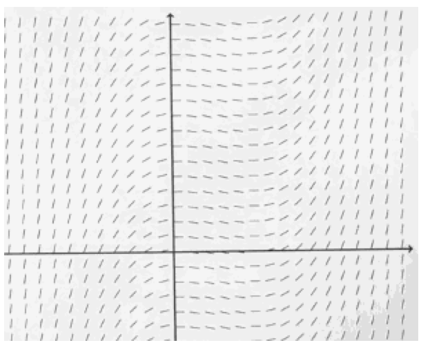
- instead of plotting a value at some height, I draw little tiny line segments with that slope.
- slop field of function xcosx
- 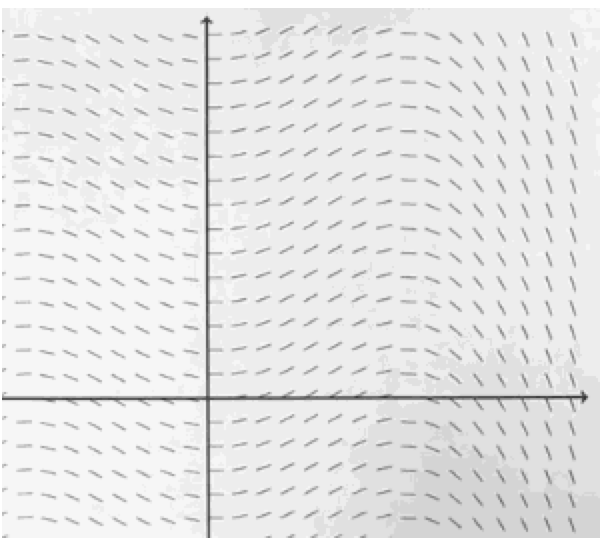
- 利用slop field， 可以大致画出 原函数的图像
- 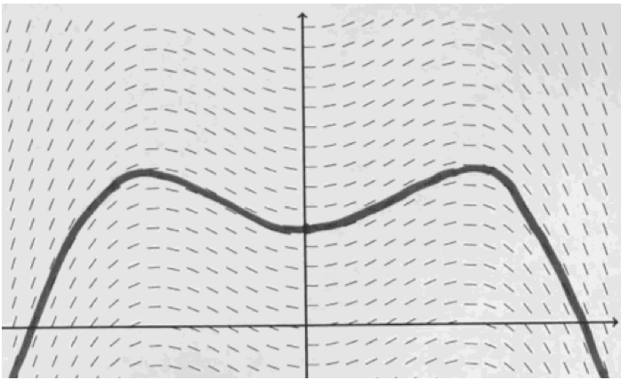
- graph for y = xsinx + cosx
- +C can move graph up and down.
Integration
What is summation notation ?
What is the sum 1 + 2 + … + k?
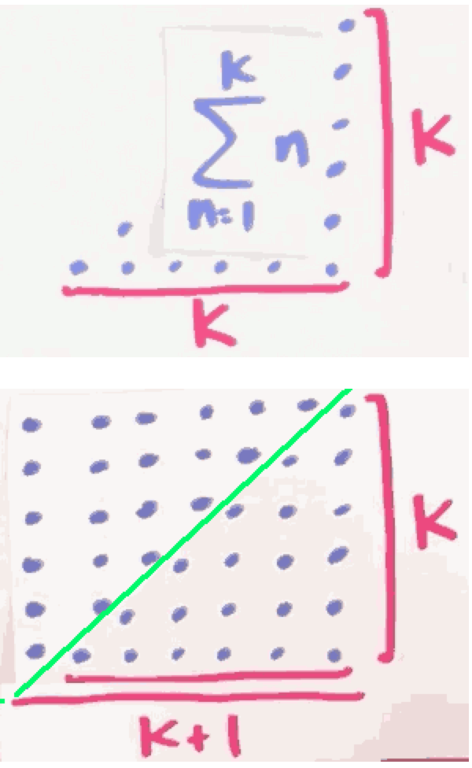
What is the sum of the first k odd numbers?
∑n=ᵏ₁ (2n-1)
= ∑n=ᵏ₁ 2n - ∑n=ᵏ₁ 1
= 2·∑n=ᵏ₁ n - ∑n=ᵏ₁ 1
= (k+1)·k - k
= k²
What is the sum of the first k perfect squares?
∑n=ᵏ₁ n² = 1² + 2² + … + k²
= k·(k+1)·(2k+1) /6
- the length of buttom of big picture is
2k+1 - the height of big picture is ∑n=ᵏ₁ n =
(k+1)·k/2 - so the sum of small pictures is
(2k+1)·(k+1)·k/6
What is the sum of the first k perfect cubes?
∑n=ᵏ₁ n³
= ( ∑n=ᵏ₁ n )²
= (k·(k+1)/2)²
= k²·(k+1)² /4
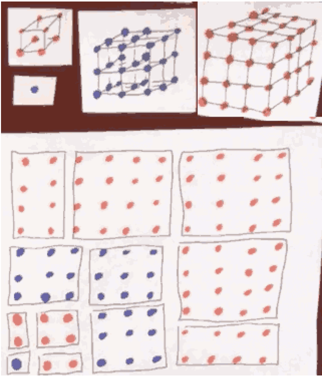
So how do we calculate area precisely ?
What is the definition of the integral of f(x) from x = a to b?

- Thm: If f is continuous, then f is integrable
- means $\int_{a}^{b} f(x)dx \ exist.$
Can we compute any other integrals ?
What is the integral of x^2 from x = 0 to 1?
- What is the ∫0,1x²dx ?
We divide [0,1] into n pieces, so each interval is 1/n
∫0,1x²dx
= limn→∞ ∑i=ⁿ₁ (i/n)²·(1/n)
= limn→∞ ∑i=ⁿ₁ 1/n³·i²
= limn→∞ 1/n³·∑i=ⁿ₁ i²
= limn→∞ ( 1/n³· (n)(n+1)(2n+1)/6 )
= limn→∞ (1/n³·(2n³+3n²+n)/6)
求这个极限很简单
= 1/3
What is the integral of x^3 from x = 1 to 2?
∫0,2x³dx
= limn→∞ ∑i=ⁿ₁ (2/n·i)³·2/n
= limn→∞ ∑i=ⁿ₁ 16/n⁴·i³
= limn→∞ 16/n⁴· ∑i=ⁿ i³
= limn→∞ 16/n⁴· (∑i=ⁿ i)²
= limn→∞ 16/n⁴·((n)(n+1)/2)²
= limn→∞ 4·n²·(n+1)²/n⁴
= 4
repeat this same kind of calculation to deduce that:
∫0,1x³dx = 1/4
now we get the final answer:
∫1,2x³dx = ∫0,2x³dx - ∫0,1x³dx = 15/4
Can we understand anything conceptually about integrals ?
What sorts of properties does the integral satisfy?

∑n=ᵐ₁ f(n) + ∑n=ᵏm+1 f(n) = ∑n=ᵏ₁ f(n)
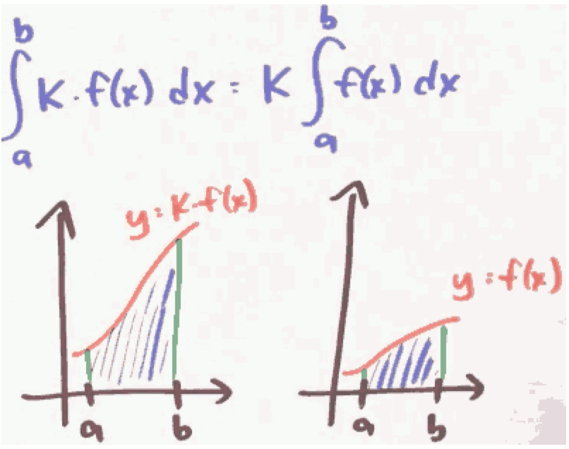
∑n=ᵇₐ k·f(n) = k·∑n=ᵇₐf(n)
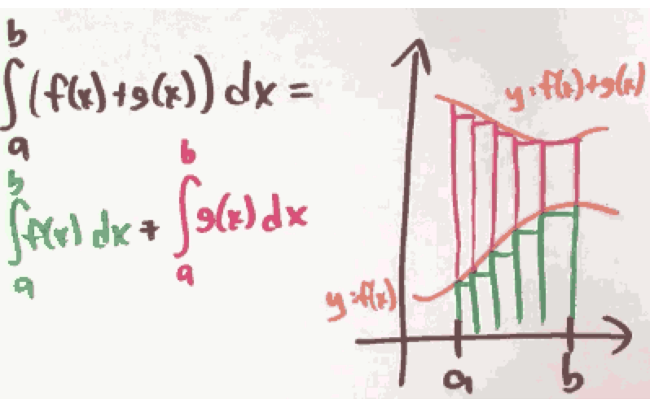
∑n=ᵇₐ (f(n)+g(n)) = ∑n=ᵇₐ f(n) + ∑n=ᵇₐ g(n)
The derivatives have the same rules about sum !
When is the accumulation function increasing? Decreasing?
When is A(x) = ∫ˣₐf(t)dt increasing ? Decreasing ?
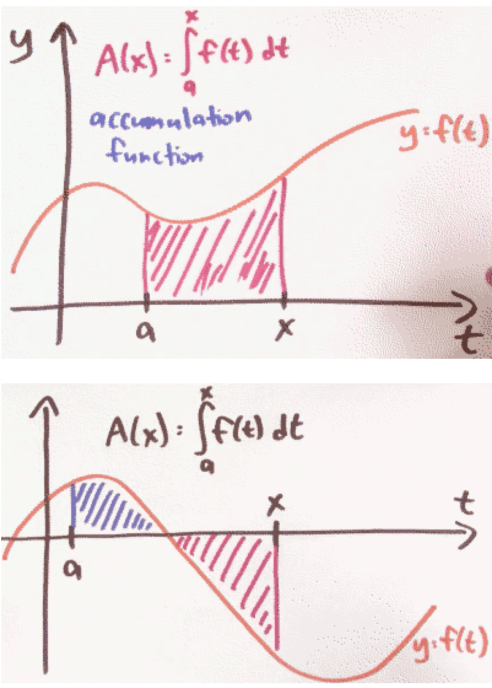
The integrals are not exactly measuring area, they’re measuring singed area.
- f positive
- A(x) increasing
- A’(x) > 0
- f negative
- A(x) decreasing
- A’(x) < 0
- 利用函数的对称性，我们可以简化 积分计算
- ∫¹₋₁ sinxdx = 0
- ∫2π₀ cosxdx = 0
Fundamental Theorem of Calculus
What is the fundamental theorem of calculus?
- Suppose f:[a,b] → ℝ is continuous. let F be the accumulation function , given by
- F(x) = ∫ˣₐ f(t)dt.
- Then F is continuous on [a,b] , differntiable on (a,b) , and F’(x) = f(x)
- So ∫ˣₐ f(t)dt is an antiderivative !
Suppose that ∫³₀ f(x)dx = 9 , and f(3) = 10 , Approximate ∫3.3₀ f(x)dx
∫3.3₀ f(x)dx
= ∫3₀ f(x)dx + ∫3.3₃ f(x)dx
= 9 + 10*0.3 = 12
How am I supposed to use this theorem ?
to evaluate integrals
- we don’t case ∫ˣₐ , we really want to calculate ∫ᵇₐ
- F(b) = ∫ᵇₐ f(t)dt
- F(a) = ∫ªₐ f(t)dt = 0
- Suppose f:[a,b] → ℝ is continuous , and F is an antiderivative of f.
- Then ∫ᵇₐ f(x)dx = F(b) - F(a)
What is the integral of sin x dx from x = 0 to x = pi?
- ∫π₀ sinxdx = ?
- -cos(π) - (-cos(0)) = 1 - (-1) = 2
What is the integral of x⁴ dx from x = 0 to x = 1?
- ∫¹₀ x⁴dx = (1)⁵/5 - (0)⁵/5 = 0.2
What else can we compute this way ?
What is the area between the graphs of y = √x and y = x² ?

- ∫¹₀ (√x -x²)dx = [ x3/2/(3/2) - x³/3 ]¹₀ = 1/3
But why is the fundamental theorem true ?
Why does the Euler method resemble a Riemann sum?
- F(h) = F(0) + h·F’(0) = F(0) + h·f(0)
- F(2h) = F(h) + h·F’(h) = F(h) + h·f(h) = h·f(0) + h·f(h)
- F(3h) = F(2h) + h·F’(2h) = F(2h) + h·f(2h) = h·f(0) + h·f(h) + h·f(2h)
- …
- F(10) = h·f(0) + h·f(h) + h·f(2h) + … + h·f(9h)
- It’s Riemann sum!
In what way is summation like integration?
| Integrating | differentiating |
|---|---|
| summing | differencing |
- 1,2,3,4,5,… — sum —> 0,1,3,6,10,15,…
- 0,1,3,6,10,15,… — calc difference —> 1,2,3,4,5,…
- So differences between sum of first k numbers and sum of first k-1 numbers, gives back the original list !
- d/dx ∫ˣₐ f(t)dt = f(x)
Physically, why is the fundamental theorem of calculus true?
- v(t) = my velocity at time t
- ∫ᵇ₀ v(t)dt = distance I traveled t=0 to t=b
- Summarizing , the accumulation function of velocity , is displacement
- The derivative of displacement is velocity.
What is d/da integral f(x) dx from x = a to x = b?
- we know d/db ∫ᵇₐ f(t)dt = f(b)
- what happens d/da ∫ᵇₐ f(t)dt ?
- -f(a)
- The conventon:
- ∫ᵇₐ f(x)dx = - ∫ªb f(x)dx
Quiz:
- ∫6.02₆ f(x)dx = 0.1 , Approximate f(6) as well as you can given this information
- ∫6.02₆ f(x)dx = f(6) * 0.02 = 0.1
- f(6) = 5
Substitution Rule
When we first learned about definite integrals, we learned about them as limits of Riemann sum. And in a few cases that definition was good enough. But usually that was much too hard.
So we learned about the fundamental theorem of calculus that reduced evaluating definite integrals down to find anti derivatives.
Now it turns out that finding anti-derivatives is also really hard to do. So we need some better techniques or just heuristics for how to find those anti-derivatives. And a big one is called U-substitution , or maybe the substitution rule. It just running the Chain Rule in reverse.
What is the chain rule backwards ?
How does the chain rule help with antidifferentiation?
∫xsin(x²)dx
u = x² , du = 2xdx
I know you might feel kind of bad, because I don’t really see a 2xdx, I only see xdx. But his sort of methods going to guide use to do the right thing.
∫xsin(x²)dx = 1/2·∫2xsin(x²)dx = 1/2·∫sin(u)du
= -1/2·cos(u) + C = -1/2·cos(x²) + C
Every differentiation rule has a corresponding anti-differentiation rule.
∫f’(g(x))·g’(x)dx , let u=g(x) du=g’(x)dx
= ∫f’(u)du = f(u)+C = f(g(x))+C
When I do u-substitution, what should u be?
How to pick u ?
- look for things you can grab as du
- that is , try to find pieces of the integrand that look like the derivative of something.
∫x/(√(4-9x²))dx
- u = 4-9x²
- ∫1/(√(4-9x²))dx
- u = 3/2·x
How should I handle the endpoints when doing u-substitution?
u-substitution is a way to find anti-derivatives. But anti-differentiation is just a means to an end. The real goal, at this point in the course, is evaluating definite integrals.
∫x=²₀ 2x(x²+1)dx
u = x²+1 , du = 2xdx
= ∫x=²₀ u³du = u⁴/4 ］x=²₀
= (x²+1)⁴/4 ］x=²₀
= (2²+1)⁴/4 - (0²+1)⁴/4 = 624/4 = 156
We did it. But I could’ve finished this problem off in a slightly diferent but equvalent way.
∫x=²₀ u³du
= ∫u=⁵₁ u³du
= u⁴/4 ］u=⁵₁
= 156.
- Method 1 : answer with x
- ∫x=ᵇₐ f’(g(x))g’(x)dx = f(g(x)) ］x=ᵇₐ
- Method 2 : endpoints with u
- ∫x=ᵇₐ f’(g(x))g’(x)dx = ∫u=g(b)g(a) f’(u)du = f(u) ］u=g(b)g(a)
Might I want to do u-substitution more than once?
Sometimes you might want to do u substitution more than once.
∫-2cosx sinx cos(cos²x+1)dx
u= cosx , du = -sinxdx
= ∫2u cos(u²+1) du
v = u²+1 , dv = 2udu
= ∫cosvdv = sinv + C
= sin( u²+1 ) + C
= sin( cos²x +1 ) + C
What are some tricks for doing substitutions ?
What is the integral of dx / (x² + 4x + 7)?
We know ∫1/(1+x²)dx = atan(x) + C
The trick is completing the square.
x² + 4x + 7
= (x+2)² + 3
So :
∫1/(x² + 4x + 7)dx
= ∫1/((x+2)² + 3 )dx
= 1/3·∫1/(1/3·(x+2)² + 1)dx
let u= 1/√3·(x+2) , du = 1/√3dx
= 1/√3·∫1/(1/3·(x+2)² + 1)·(1/√3)dx
= 1/√3·∫ 1/(u²+1)du
= 1/√3·atan(u) + C
= …
What is the integral of (x+10)(x-1)¹⁰ dx from x = 0 to x = 1?
∫x=¹₀ (x+10)(x-1)¹⁰dx
let u =x-1, du = dx , x = u+1
= ∫x=¹₀ (u+11)u¹⁰du
= ∫x=¹₀ u¹¹+11u¹⁰du
= u¹²/12 + u¹¹ ］u=⁰₋₁
= 11/12
What is the integral of x / (x+1)^(1/3) dx?
∫x/∛(x+1)dx
let u=x+1, du=dx , x=u-1
= ∫(u-1)/∛u du
There is a more easy way to do this.
let u = ∛(x+1) , u³=x+1, x=u³-1 , dx = 3u²du
= ∫(u³-1)/u·3u²du
= ∫(3u⁴-3u)du // it is polynomial
= 3/5·u⁵ - 3/2·u² + C
- This is called rationalizing substitution.
What is the integral of dx / (1 + cos x) ?
Sometimes the best substitution to make isn’t even visible until after we’ve messed around with the integrand some how.
∫ 1/(1+cosx) dx
= ∫ 1/(1+cosx)·(1-cosx)/(1-cosx) dx
= ∫ (1-cosx)/sin²x dx
= ∫ 1/sin²xdx - ∫ cosx/sin²xdx
= -cotx - ∫ cosx/sin²xdx
let u = sinx, du=cosxdx
= -cotx - ∫ 1/u²du
= -cotx - 1/u +C
= -cotx - 1/sinx +C
What if I differentiate an accumulation function ?
What is d/dx integral sin t dt from t = 0 to t = x² ?
What is d/dx ∫x²₀ sintdt ? How to deal with x² ?
We know d/dx ∫x₀ sintdt = sinx. What I’m asking is what if this endpoint weren’t x anymore , but some funtion g(x) ? ∫g(x)₀ sintdt = ?
f(x) = ∫x₀ sintdt
=> f(g(x)) = ∫g(x)₀ sintdt
=> d/dx f(g(x)) = d/dx ∫g(x)₀ sintdt
d/dx f(g(x))
= f’(g(x))·g’(x)
f(x) = ∫x₀ sintdt
=> f’(x) = sinx
=> d/dx f(g(x)) = sin(g(x))·g’(x)
g(x) = x² , g’(x) = 2x
=> d/dx f(g(x)) = sin(x²)·2x
Quiz :
Define a functin f: ℝ → ℝ , by the rule f(t) = ∫sint₀ cosxdx. what is f’(t) ?
- (cost)(cossint)
Formally, why is the fundamental theorem of calculus true?
F(x) = ∫ˣₐf(t)dt
F’(x) = f(x)
- a, x, t
Techniques of Integration
How do I do integration by parts
What antidifferentiation rule corresponds to the product rule in reverse?
∫d/dx(f(x)g(x))dx = ∫(f’(x)g(x) + f(x)g’(x))dx = f(x)g(x) + C
∫f’(x)g(x)dx + ∫f(x)g’(x)dx = f(x)g(x) + C
∫f(x)g’(x)dx = f(x)g(x) - ∫f’(x)g(x)dx
- what this is saying ?
- It’s saying that I can do
∫f(x)g'(x)dxif I can do∫f'(x)g(x)dx
- It’s saying that I can do
let u=f(x), dv = g’(x)dx
du = f'(x), v=g(x)
so we get :
This is maybe why it makes sense to call this integration by parts.
It’s trading game. I’m trading ∫udv with ∫vdu. But now on part is differentiated and another part of the inner grand is antidifferentiated.
What is ∫xeˣdx ?
The basic idea of integration by parts is that it lets you differentiate part of the integrand, but only if you’re willing to pay a price. And that price is anti-differentiating the other part of the integrand.
∫xeˣdx
let u=x, dv=eˣdx
so du = dx , v = eˣ , now we get
∫xeˣdx = xeˣ - ∫eˣdx = xeˣ - eˣ + C
Now, we can use the same trick to attack similar integration problems. For example, let’s say you want to anti-differentiate some polynomial in x times eˣ.

How does parts help when antidifferentiating logx ?
∫logxdx
let u=logx, dv = dx , so du=1/xdx , v = x
so
∫logxdx = xlogx - ∫x·1/xdx = xlogx - x + C
What is an ∫eˣcosxdx ?
let u=eˣ , dv = cosxdx
so ∫eˣcosxdx = eˣsinx - ∫sinxeˣdx
what is ∫sinxeˣdx ?
let u=eˣ , dv = sinxdx
we get ∫sinxeˣdx = -eˣcosx + ∫cosxeˣdx
=>
∫eˣcosxdx = eˣsinx - ( -eˣcosx + ∫cosxeˣdx )
=> 2·∫eˣcosxdx = eˣsinx + eˣcosx
=> ∫eˣcosxdx = (eˣsinx + eˣcosx )/2
How do I know when to use parts ?
What is an antiderivative of e^√x d?
Sometimes it isn’t clear that you can do integration by parts until after you perform some substitution
∫e√xdx
let u=√x , du = 1/(2√x)dx , dx = 2√xdu
∫e√xdx = ∫eᵘ·2udu
let v=2u , dw = eᵘdu ; dv = 2du , w = eᵘ
注意这里的选择很重要 eᵘdu 可以极大简化运算
= 2u·eᵘ - ∫eᵘ2du
= 2u·eᵘ - 2eᵘ
= 2√x·e√x - 2e√x
= 2e√x (√x-1)
How do I integrate powers of sin and cos ?
What is ∫sin2n+1x·cos²ⁿxdx ?
trick: You can trade sines for cosines or vice versa.
- sin²x + cos²x = 1
∫sin³x·cos²xdx
= ∫sinx·sin²x·cos²xdx
= ∫sinx·(1-cos²x)·cos²xdx
let u=cosx, du=-sinxdx
= -∫(1-u²)·u²du
= -( u³/3 - u⁵/5 ) + C
= -cos³x/3 + cos⁵x/5 + C
- The trick works as long as we’ve got an odd power on the sine, or an odd power on the cosine.
- the key is that you can convert that odd power to
even powerx (sin/cos) - and the
even powercan apply the rulesin²x + cos²x = 1
- the key is that you can convert that odd power to
What is ∫π₀ sin²ⁿxdx ?
Now we know how the handle odd power of sin/cos. But how to handle even power ? We need the Half·Angle Formual.
- Half·Angle Formual
- sin²x = (1-cos(2x))/2
- cos²x = (1+cos(2x))/2
∫sin⁴xdx
= ∫(sin²x)²dx
= ∫( (1-cos(2x))/2 )²dx
= ∫( 1/4 + cos²(2x)/4 - cos(2x)/2 )dx
= ∫cos²(2x)/4dx - ∫cos(2x)/2dx + ∫1/4dx
= ∫cos²(2x)/4dx - sin(2x)/4 + 1/4x
apply Half·Angle Formual again
= ∫(1+cos(4x))/8dx - sin(2x)/4 + 1/4x
= 1/8x + sin(4x)/32 - sin(2x)/4 + 1/4x +C
= 3/8x + sin(4x)/32 - sin(2x)/4 + C
I should say that in some cases you can get away with doing a bit less work.
∫π₀ sin²ⁿxdx
// cos(2x) would integrate to 0. but cos²(2x) doesn’t !
= ∫π₀ ( 1/4 + cos²(2x)/4 - cos(2x)/2 )dx
= ∫π₀ ( 1/4 + (1+ cos(4x) )/8 ) dx
= ∫π₀ 3/8 dx = 3/8 π
What is ∫sinⁿxdx in terms of ∫sinⁿ⁻²xdx ?
∫π/2₀ sin³²xdx = 300540195·π / 4294967296
= 3*3*5*17*19*23*29*31* π / 2³²
Why does it factor so nicely ?
TODO